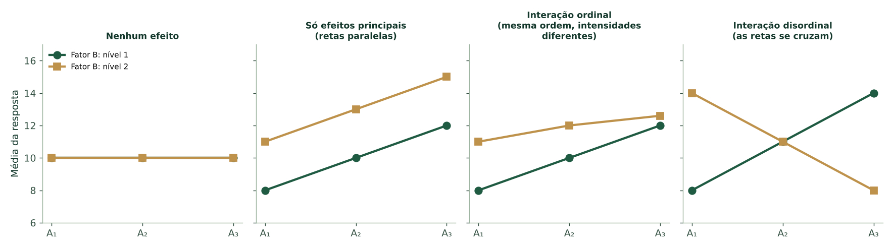
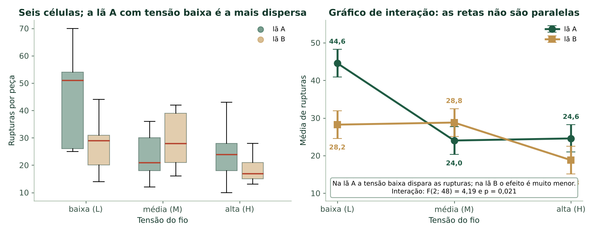

ANOVA fatorial
Estuda dois ou mais fatores no mesmo experimento e, sobretudo, se o efeito de um depende do nível do outro.
Comece por aqui
Dois fatores podem ser estudados em dois experimentos separados — ou num só, combinando todos os níveis de um com todos os níveis do outro. A segunda opção é mais econômica e responde a uma pergunta que a primeira não alcança: o efeito de um fator depende do nível do outro? Essa pergunta é a da interação, e é quase sempre a mais interessante das três.
Um fatorial 2 × 3 com 9 repetições usa 54 unidades e estima os dois efeitos principais com a mesma precisão que dois experimentos separados de 54 unidades cada — além de entregar a interação de graça. Essa eficiência é a razão pela qual o delineamento fatorial substituiu, na prática experimental, o hábito de variar um fator de cada vez.
O que é a ANOVA fatorial
Com dois fatores, a variação total se reparte em quatro parcelas: o efeito principal de A (quanto as médias dos níveis de A diferem entre si, ignorando B), o efeito principal de B, a interação A:B e o resíduo. A interação mede o que as médias das células têm de diferente do que a simples soma dos dois efeitos principais previria.

Havendo interação significativa, os efeitos principais perdem o interesse — e podem ser enganosos. A média de um fator ao longo dos níveis do outro descreve uma situação que não ocorre em lugar nenhum. A leitura correta passa a ser por efeitos simples: o efeito de A dentro de cada nível de B, separadamente.
Pressupostos e como verificá-los
| Pressuposto | Por que importa | Como verificar |
|---|---|---|
| Observações independentes | Indispensável. | Delineamento; se houver medidas repetidas, veja ANOVA mista. |
| Resíduos aproximadamente normais | Sustenta a distribuição F. | shapiro.test(residuals(modelo)); Q-Q. |
| Variâncias homogêneas entre as células | O erro é comum a todas as combinações. | Levene sobre as a × b células; tabela de variâncias. |
| Delineamento completo: todas as combinações presentes | Sem alguma célula, a interação não é estimável. | table(A, B). |
| Pelo menos 2 repetições por célula | Com 1, a interação se confunde com o resíduo. | Conte as observações por célula. |
| Balanceamento (desejável, não obrigatório) | Com células de tamanhos iguais, as somas de quadrados são ortogonais e a ordem dos termos não importa. | table(A, B); se desbalanceado, use somas de quadrados do tipo II ou III. |
No exemplo desta ficha, a razão entre a maior e a menor variância das células é 13,7, e o teste de Levene rejeita (p = 0,023). A resposta é uma contagem, e nesses casos a variância costuma crescer com a média. A raiz quadrada é a transformação indicada: na nova escala o teste de Levene devolve p = 0,247 e a interação permanece significativa (p = 0,031). Quando uma conclusão sobrevive à mudança de escala, ela não é artefato da heterogeneidade.
Hipóteses e estatística de teste
São três hipóteses nulas, testadas na mesma tabela:
Em que:
- \(a,\ b\)
- números de níveis dos fatores A e B
- \(r\)
- repetições por célula
- \(\bar{y}_{ij\cdot}\)
- média da célula (i, j)
- \(\bar{y}_{i\cdot\cdot},\ \bar{y}_{\cdot j\cdot}\)
- médias marginais de A e de B
- \((\alpha\beta)_{ij}\)
- termo de interação: o que a célula tem além da soma dos dois efeitos
- \(F\)
- em cada linha, o quadrado médio do termo dividido pelo quadrado médio do resíduo
Exemplo numérico, passo a passo
Dados warpbreaks: dois tipos de lã × três níveis de tensão, com 9 peças por célula. Médias das células (rupturas por peça):
| Lã | Tensão baixa (L) | Tensão média (M) | Tensão alta (H) | Média da lã |
|---|---|---|---|---|
| A | 44,556 | 24,000 | 24,556 | 31,037 |
| B | 28,222 | 28,778 | 18,778 | 25,259 |
| Média da tensão | 36,389 | 26,389 | 21,667 | 28,148 |
\[\begin{aligned}SQ_{\text{lã}} &= 3\times9\bigl[(31{,}037-28{,}148)^2 \\ &\quad +(25{,}259-28{,}148)^2\bigr] \\ &= 450{,}67,\end{aligned}\] com 1 gl.
\[\begin{aligned}SQ_{\text{tensão}} &= 2\times9\bigl[(36{,}389-28{,}148)^2 \\ &\quad +(26{,}389-28{,}148)^2 \\ &\quad +(21{,}667-28{,}148)^2\bigr] \\ &= 2\,034{,}26,\end{aligned}\] com 2 gl.
Para a célula (A, L), o termo de interação é \[\begin{aligned}&44{,}556-31{,}037-36{,}389 \\ &\quad +28{,}148 \\ &= +5{,}278:\end{aligned}\] a lã A com tensão baixa rompe 5,3 vezes mais do que a soma dos dois efeitos principais previa. Somando os quadrados das seis células e multiplicando por 9, \(SQ_{AB}=1\,002{,}78\), com \((2-1)(3-1)=2\) gl.
Por diferença, \[\begin{aligned}SQ_{\text{resíduo}} &= 9\,232{,}81-450{,}67 \\ &\quad -2\,034{,}26-1\,002{,}78 \\ &= 5\,745{,}11,\end{aligned}\] com \(54-6=48\) gl, de modo que \(QM_{\text{res}}=119{,}69\).
Somas de quadrados: tipos I, II e III
| Tipo | O que mede | Quando usar |
|---|---|---|
| I (sequencial) | Cada termo ajustado apenas pelos anteriores; depende da ordem. | Só quando há uma hierarquia natural declarada a priori. É o padrão de aov() e anova(). |
| II (parcial, hierárquica) | Cada efeito principal ajustado pelo outro, mas não pela interação. | Delineamentos desbalanceados, quando a interação não é significativa. |
| III (parcial completa) | Cada termo ajustado por todos os demais, inclusive a interação. | Delineamentos desbalanceados com interação. Exige contrastes de soma zero. |
Em delineamentos balanceados os três tipos coincidem, e a questão não se coloca. Com células de tamanhos diferentes, eles divergem, e usar o padrão do R sem pensar leva a resultados que dependem da ordem em que os termos foram escritos na fórmula.
Como interpretar os resultados
- Olhe primeiro a linha da interação. Ela decide como todo o resto será lido.
- Se a interação não for significativa, leia os efeitos principais normalmente: cada fator tem um efeito que vale em todos os níveis do outro.
- Se a interação for significativa, não interprete os efeitos principais. Passe aos efeitos simples: teste o fator A dentro de cada nível de B, com ajuste para múltiplas comparações.
- Apresente sempre o gráfico de interação, com erros-padrão.
- Reporte os tamanhos de efeito parciais dos três termos.
| Elemento | O que informa | Cuidado |
|---|---|---|
| F da interação | Se os efeitos dos fatores se combinam de forma aditiva. | É a primeira linha a olhar. |
| F dos efeitos principais | Diferença entre as médias marginais. | Só interpretável sem interação. |
| Médias das células | O resultado de fato observado. | É o que o gráfico de interação mostra. |
| η² parcial | Magnitude de cada termo. | Os parciais não somam 1. |
| Efeitos simples | Onde o efeito existe e onde não existe. | Ajuste pelo número de testes. |
| QM do resíduo | Ruído experimental. | Sua raiz é o desvio-padrão residual. |
Como executar no R e em Python
Onde executar o código em Python
Não é preciso instalar nada: o Google Colab é um computador na nuvem, gratuito, que executa Python pelo navegador e já traz as bibliotecas usadas aqui (numpy, scipy e matplotlib).
aov(y ~ A * B) é a forma curta de aov(y ~ A + B + A:B), ambas no pacote stats. Para delineamentos desbalanceados, car::Anova() permite escolher o tipo de soma de quadrados — e, para o tipo III, é preciso antes definir options(contrasts = c("contr.sum", "contr.poly")). emmeans fornece as médias das células, os efeitos simples (~A | B) e as comparações com ajuste; effectsize calcula η² e ω² parciais.
modelo <- aov(breaks ~ wool * tension, data = warpbreaks)
summary(modelo)
emmeans::emmeans(modelo, ~tension | wool) |> pairs(adjust = "tukey")
Exemplo de aplicação
Contexto dos dados
warpbreaks registra o número de rupturas do fio em 54 teares, combinando dois tipos de lã (A e B) com três níveis de tensão do fio (baixa, média e alta), em nove peças por combinação. É um fatorial 2 × 3 completo e balanceado.
Código em R
# ANOVA fatorial (dois fatores com interação): exemplo completo ----
# Pacotes: stats (base), car (tipos de soma de quadrados), emmeans (efeitos simples)
# install.packages(c("car", "emmeans"))
# 1. Dados: warpbreaks, rupturas do fio em teares, por tipo de lã e tensão
data(warpbreaks)
str(warpbreaks)
table(warpbreaks$wool, warpbreaks$tension) # 9 observações por célula: balanceado
with(warpbreaks, tapply(breaks, list(wool, tension), mean))
with(warpbreaks, tapply(breaks, list(wool, tension), sd))
# 2. O gráfico de interação vem ANTES da tabela
with(warpbreaks, interaction.plot(tension, wool, breaks,
ylab = "Média de rupturas", xlab = "Tensão",
col = c("darkgreen", "orange"), lwd = 3, pch = 19, type = "b"))
# 3. O modelo completo
modelo <- aov(breaks ~ wool * tension, data = warpbreaks) # o mesmo que wool + tension + wool:tension
summary(modelo)
# 4. Pressupostos
par(mfrow = c(2, 2)); plot(modelo); par(mfrow = c(1, 1))
shapiro.test(residuals(modelo))
library(car)
leveneTest(breaks ~ wool * tension, data = warpbreaks, center = median)
with(warpbreaks, tapply(breaks, list(wool, tension), var))
# 5. Tamanho de efeito
library(effectsize)
eta_squared(modelo, partial = TRUE)
omega_squared(modelo, partial = TRUE)
# 6. Interação significativa: a leitura passa a ser por EFEITOS SIMPLES
library(emmeans)
md <- emmeans(modelo, ~tension | wool) # efeito da tensão dentro de cada lã
md
pairs(md, adjust = "tukey")
joint_tests(modelo, by = "wool") # teste F da tensão dentro de cada lã
me <- emmeans(modelo, ~wool | tension) # efeito da lã dentro de cada tensão
pairs(me)
# 7. Tukey entre as seis células
TukeyHSD(modelo, which = "wool:tension")
# 8. Se as variâncias forem heterogêneas: a escala da raiz quadrada
modelo_raiz <- aov(sqrt(breaks) ~ wool * tension, data = warpbreaks)
summary(modelo_raiz)
leveneTest(sqrt(breaks) ~ wool * tension, data = warpbreaks, center = median)
# 9. Para delineamentos DESBALANCEADOS, declare o tipo de soma de quadrados
options(contrasts = c("contr.sum", "contr.poly"))
Anova(lm(breaks ~ wool * tension, data = warpbreaks), type = "III")
options(contrasts = c("contr.treatment", "contr.poly")) # volta ao padrão
A mesma análise em Python, com os resultados
Cole o código em um notebook do Google Colab ↗ e execute com Shift+Enter. Os valores abaixo são a saída desse código.
# Bibliotecas: numpy, scipy e matplotlib (já instaladas no Google Colab)
import numpy as np
from scipy import stats
import itertools
# Dados: warpbreaks (R). Número de rupturas do fio em teares, segundo o tipo de
# lã (A, B) e o nível de tensão do fio (L = baixa, M = média, H = alta).
# Fonte original: Tippett (1950). Delineamento 2 x 3 com 9 repetições por célula.
celulas = {
("A", "L"): [26, 30, 54, 25, 70, 52, 51, 26, 67],
("A", "M"): [18, 21, 29, 17, 12, 18, 35, 30, 36],
("A", "H"): [36, 21, 24, 18, 10, 43, 28, 15, 26],
("B", "L"): [27, 14, 29, 19, 29, 31, 41, 20, 44],
("B", "M"): [42, 26, 19, 16, 39, 28, 21, 39, 29],
("B", "H"): [20, 21, 24, 17, 13, 15, 15, 16, 28],
}
las = ["A", "B"]
tensoes = ["L", "M", "H"]
a, b = len(las), len(tensoes)
r = 9 # repetições por célula
N = a * b * r
y = {kv: np.array(v, dtype=float) for kv, v in celulas.items()}
todos = np.concatenate([y[(i, j)] for i in las for j in tensoes])
M = np.array([[y[(i, j)].mean() for j in tensoes] for i in las]) # médias das células
print("Médias das células (número de rupturas)")
print("lã L M H média da lã")
for ii, i in enumerate(las):
print(f" {i} {M[ii,0]:6.3f} {M[ii,1]:6.3f} {M[ii,2]:6.3f} {M[ii].mean():6.3f}")
print(f"média {M[:,0].mean():6.3f} {M[:,1].mean():6.3f} {M[:,2].mean():6.3f} {todos.mean():6.3f}")
print("\nDesvios-padrão das células")
for i in las:
print(f" {i} " + " ".join(f"{y[(i,j)].std(ddof=1):6.3f}" for j in tensoes))
# 1. Decomposição da soma de quadrados (delineamento balanceado: as somas são ortogonais)
mg = todos.mean()
SQ_total = ((todos - mg)**2).sum()
SQ_la = b * r * ((M.mean(axis=1) - mg)**2).sum()
SQ_tensao = a * r * ((M.mean(axis=0) - mg)**2).sum()
SQ_celulas = r * ((M - mg)**2).sum()
SQ_inter = SQ_celulas - SQ_la - SQ_tensao
SQ_res = SQ_total - SQ_celulas
gl_la, gl_tensao, gl_inter, gl_res = a - 1, b - 1, (a - 1) * (b - 1), N - a * b
QM_res = SQ_res / gl_res
linhas = [("Lã", gl_la, SQ_la), ("Tensão", gl_tensao, SQ_tensao), ("Lã:Tensão", gl_inter, SQ_inter)]
print(f"\nSQ total = {SQ_total:.2f} = {SQ_la:.2f} (lã) + {SQ_tensao:.2f} (tensão) "
f"+ {SQ_inter:.2f} (interação) + {SQ_res:.2f} (resíduo)")
print("\nFonte GL SQ QM F p-valor")
for nome, gl, sq in linhas:
qm = sq / gl
Fv = qm / QM_res
print(f"{nome:<12} {gl:3d} {sq:8.2f} {qm:9.3f} {Fv:6.4f} {stats.f.sf(Fv, gl, gl_res):.5f}")
print(f"{'Resíduo':<12} {gl_res:3d} {SQ_res:8.2f} {QM_res:9.3f}")
print(f"{'Total':<12} {N-1:3d} {SQ_total:8.2f}")
print(f"DP do resíduo = {np.sqrt(QM_res):.3f} rupturas")
# 2. Tamanho de efeito
print("\nefeito eta² parcial omega² parcial")
for nome, gl, sq in linhas:
e2p = sq / (sq + SQ_res)
w2p = (sq - gl * QM_res) / (sq + (N - gl) * QM_res)
print(f"{nome:<12} {e2p:.4f} {w2p:.4f}")
# 3. Pressupostos
res = np.concatenate([y[(i, j)] - M[ii, jj] for ii, i in enumerate(las) for jj, j in enumerate(tensoes)])
print(f"\nShapiro-Wilk dos resíduos: W = {stats.shapiro(res)[0]:.4f}, p-valor = {stats.shapiro(res)[1]:.4f}")
gs = [y[(i, j)] for i in las for j in tensoes]
print(f"Levene nas 6 células (mediana): W = {stats.levene(*gs, center='median')[0]:.4f}, "
f"p-valor = {stats.levene(*gs, center='median')[1]:.4f}")
vs = [g.var(ddof=1) for g in gs]
print(f"Razão entre a maior e a menor variância das células = {max(vs)/min(vs):.2f}")
print("A célula A-L tem variância muito acima das demais: a raiz quadrada estabiliza.")
# 3b. O mesmo modelo na escala da raiz quadrada, remédio usual para contagens
raiz = {kv: np.sqrt(v) for kv, v in y.items()}
Mr = np.array([[raiz[(i, j)].mean() for j in tensoes] for i in las])
tr = np.concatenate([raiz[(i, j)] for i in las for j in tensoes])
mgr = tr.mean()
SQt_r = ((tr - mgr)**2).sum()
SQ_la_r = b * r * ((Mr.mean(axis=1) - mgr)**2).sum()
SQ_te_r = a * r * ((Mr.mean(axis=0) - mgr)**2).sum()
SQ_cel_r = r * ((Mr - mgr)**2).sum()
SQ_in_r = SQ_cel_r - SQ_la_r - SQ_te_r
QM_res_r = (SQt_r - SQ_cel_r) / gl_res
gsr = [raiz[(i, j)] for i in las for j in tensoes]
print(f" Levene na escala da raiz: p-valor = {stats.levene(*gsr, center='median')[1]:.4f}")
vr = [g.var(ddof=1) for g in gsr]
print(f" razão entre variâncias na escala da raiz = {max(vr)/min(vr):.2f}")
for nome, gl, sq in [("Lã", gl_la, SQ_la_r), ("Tensão", gl_tensao, SQ_te_r), ("Lã:Tensão", gl_inter, SQ_in_r)]:
Fv = (sq / gl) / QM_res_r
print(f" {nome:<10} F({gl}; {gl_res}) = {Fv:6.4f} | p-valor = {stats.f.sf(Fv, gl, gl_res):.5f}")
# 4. Como a interação se manifesta: efeitos simples da tensão dentro de cada lã
print("\nEfeitos simples da tensão, dentro de cada lã")
for ii, i in enumerate(las):
SQ_s = r * ((M[ii] - M[ii].mean())**2).sum()
Fv = (SQ_s / (b - 1)) / QM_res
print(f" lã {i}: SQ = {SQ_s:8.3f} | F({b-1}; {gl_res}) = {Fv:7.4f} | p-valor = {stats.f.sf(Fv, b-1, gl_res):.3e}")
print("\nEfeitos simples da lã, dentro de cada nível de tensão")
for jj, j in enumerate(tensoes):
dif = M[1, jj] - M[0, jj]
ep = np.sqrt(2 * QM_res / r)
t = dif / ep
print(f" tensão {j}: B - A = {dif:+7.3f} | EP = {ep:.3f} | t({gl_res}) = {t:+.4f} | "
f"p-valor = {2*stats.t.sf(abs(t), gl_res):.4f}")
# 5. Tukey HSD nas seis células
print("\nTukey HSD entre as seis combinações lã x tensão")
rot = [f"{i}{j}" for i in las for j in tensoes]
mc = np.array([y[(i, j)].mean() for i in las for j in tensoes])
q95 = stats.studentized_range.ppf(0.95, len(rot), gl_res)
ep = np.sqrt(QM_res / r)
print(f"q crítico (5%, 6 médias, gl = {gl_res}) = {q95:.4f} | DMS = {q95*ep:.3f} rupturas")
for u, v in itertools.combinations(range(len(rot)), 2):
dif = mc[v] - mc[u]
pa = stats.studentized_range.sf(abs(dif) / ep, len(rot), gl_res)
if pa < 0.05:
print(f" {rot[v]} - {rot[u]}: {dif:+7.3f} | p ajustado = {pa:.4f} *")
# 6. O modelo só com efeitos principais, para comparação
SQ_res_ad = SQ_res + SQ_inter
gl_res_ad = gl_res + gl_inter
QM_res_ad = SQ_res_ad / gl_res_ad
print("\nModelo aditivo (sem interação), para comparação")
for nome, gl, sq in linhas[:2]:
Fv = (sq / gl) / QM_res_ad
print(f" {nome:<10} F({gl}; {gl_res_ad}) = {Fv:6.4f} | p-valor = {stats.f.sf(Fv, gl, gl_res_ad):.5f}")
print(f" o efeito da lã, que era p = {stats.f.sf((SQ_la/gl_la)/QM_res, gl_la, gl_res):.4f} no modelo completo,")
print(f" passa a p = {stats.f.sf((SQ_la/gl_la)/QM_res_ad, gl_la, gl_res_ad):.4f} quando a interação é jogada no resíduo.")
Resultados da execução
Médias das células (número de rupturas) lã L M H média da lã A 44.556 24.000 24.556 31.037 B 28.222 28.778 18.778 25.259 média 36.389 26.389 21.667 28.148 Desvios-padrão das células A 18.098 8.660 10.273 B 9.859 9.431 4.893 SQ total = 9232.81 = 450.67 (lã) + 2034.26 (tensão) + 1002.78 (interação) + 5745.11 (resíduo) Fonte GL SQ QM F p-valor Lã 1 450.67 450.667 3.7653 0.05821 Tensão 2 2034.26 1017.130 8.4980 0.00069 Lã:Tensão 2 1002.78 501.389 4.1891 0.02104 Resíduo 48 5745.11 119.690 Total 53 9232.81 DP do resíduo = 10.940 rupturas efeito eta² parcial omega² parcial Lã 0.0727 0.0487 Tensão 0.2615 0.2173 Lã:Tensão 0.1486 0.1056 Shapiro-Wilk dos resíduos: W = 0.9869, p-valor = 0.8162 Levene nas 6 células (mediana): W = 2.8910, p-valor = 0.0232 Razão entre a maior e a menor variância das células = 13.68 A célula A-L tem variância muito acima das demais: a raiz quadrada estabiliza. Levene na escala da raiz: p-valor = 0.2468 razão entre variâncias na escala da raiz = 6.27 Lã F(1; 48) = 3.0222 | p-valor = 0.08854 Tensão F(2; 48) = 8.2752 | p-valor = 0.00082 Lã:Tensão F(2; 48) = 3.7500 | p-valor = 0.03067 Efeitos simples da tensão, dentro de cada lã lã A: SQ = 2468.519 | F(2; 48) = 10.3121 | p-valor = 1.881e-04 lã B: SQ = 568.519 | F(2; 48) = 2.3750 | p-valor = 1.039e-01 Efeitos simples da lã, dentro de cada nível de tensão tensão L: B - A = -16.333 | EP = 5.157 | t(48) = -3.1670 | p-valor = 0.0027 tensão M: B - A = +4.778 | EP = 5.157 | t(48) = +0.9264 | p-valor = 0.3589 tensão H: B - A = -5.778 | EP = 5.157 | t(48) = -1.1203 | p-valor = 0.2682 Tukey HSD entre as seis combinações lã x tensão q crítico (5%, 6 médias, gl = 48) = 4.1972 | DMS = 15.306 rupturas AM - AL: -20.556 | p ajustado = 0.0030 * AH - AL: -20.000 | p ajustado = 0.0041 * BL - AL: -16.333 | p ajustado = 0.0302 * BM - AL: -15.778 | p ajustado = 0.0398 * BH - AL: -25.778 | p ajustado = 0.0001 * Modelo aditivo (sem interação), para comparação Lã F(1; 50) = 3.3393 | p-valor = 0.07361 Tensão F(2; 50) = 7.5367 | p-valor = 0.00138 o efeito da lã, que era p = 0.0582 no modelo completo, passa a p = 0.0736 quando a interação é jogada no resíduo.

| Fonte | GL | SQ | QM | F | p |
|---|---|---|---|---|---|
| Lã | 1 | 450,67 | 450,667 | 3,765 | 0,0582 |
| Tensão | 2 | 2 034,26 | 1 017,130 | 8,498 | 0,00069 |
| Lã : Tensão | 2 | 1 002,78 | 501,389 | 4,189 | 0,0210 |
| Resíduo | 48 | 5 745,11 | 119,690 | — | — |
| Total | 53 | 9 232,81 | — | — | — |
| Elemento | Valor | Leitura |
|---|---|---|
| η² parcial (lã / tensão / interação) | 0,073 / 0,262 / 0,149 | A tensão é o termo dominante. |
| ω² parcial | 0,049 / 0,217 / 0,106 | Versões corrigidas. |
| Shapiro–Wilk dos resíduos | W = 0,987; p = 0,816 | Normalidade atendida. |
| Levene nas 6 células | W = 2,891; p = 0,0232 | Variâncias heterogêneas. |
| Razão entre variâncias das células | 13,68 | Puxada pela célula A-L. |
| Na escala da raiz quadrada | Levene p = 0,247; interação F = 3,750; p = 0,0307 | A conclusão sobrevive à transformação. |
| Efeito simples da tensão na lã A | F(2; 48) = 10,312; p = 0,00019 | Forte. |
| Efeito simples da tensão na lã B | F(2; 48) = 2,375; p = 0,1039 | Ausente. |
| Efeito simples da lã na tensão baixa | B − A = −16,33; t(48) = −3,167; p = 0,0027 | Significativo. |
| Efeito simples da lã nas tensões média e alta | p = 0,359 e p = 0,268 | Não significativo. |
| Tukey entre as 6 células | DMS = 15,31 rupturas | A célula A-L difere de todas as outras cinco. |
Leitura: a interação é significativa (p = 0,021), e é ela que organiza a conclusão. Na lã A, a tensão importa muito: baixá-la de alta para baixa eleva as rupturas de 24,6 para 44,6 por peça. Na lã B, a tensão praticamente não importa — o efeito simples não chega perto da significância (p = 0,104). Do outro ângulo, a lã só faz diferença sob tensão baixa, onde a B rompe 16,3 vezes menos que a A; nas tensões média e alta as duas se equivalem.
Observe o que aconteceria se a interação fosse ignorada. O efeito principal da lã, no modelo completo, tem p = 0,058; jogando a interação no resíduo, passa a p = 0,074 — e, nos dois casos, a conclusão “a lã não importa” seria falsa, porque ela importa bastante, só que apenas sob tensão baixa. A média das três tensões descreve um tear que não existe. É por isso que a ordem de leitura começa pela interação.
Recomendação prática: se a tensão de operação for baixa, a escolha da lã é decisiva; se for média ou alta, pode ser feita por outro critério, como custo. E a célula a evitar é uma só: lã A sob tensão baixa, a única que o teste de Tukey separa de todas as demais.
Erros comuns
| Erro | Como evitar |
|---|---|
| Interpretar efeitos principais com interação significativa | Passe aos efeitos simples; a média marginal descreve algo que não ocorre. |
| Rodar a tabela antes de ver o gráfico de interação | O gráfico é o que torna a tabela legível. |
Usar aov() em dados desbalanceados sem pensar no tipo de SQ | Com células desiguais, a ordem dos termos altera o resultado; use tipo II ou III. |
| Pedir tipo III sem trocar os contrastes | Com contr.treatment, o tipo III devolve números sem sentido. |
| Ter uma só repetição por célula | A interação fica confundida com o resíduo e não pode ser testada. |
| Testar homogeneidade por fator, e não por célula | O erro é comum às a × b células. |
| Fazer todos os testes de efeitos simples sem ajuste | Ajuste pelo número de comparações. |
| Concluir ausência de interação por p > 0,05 | O teste de interação costuma ter pouco poder; olhe também o gráfico e o tamanho de efeito. |
Alternativas e fluxo de trabalho
| Procedimento | Quando preferir |
|---|---|
| ANOVA de um fator | Há apenas um fator de interesse. |
| ANCOVA | Um dos preditores é contínuo. |
| ANOVA mista | Um dos fatores é medido dentro da mesma unidade. |
| Regressão com variáveis indicadoras | Mesma análise, com previsão e covariáveis. |
| Modelo linear generalizado | Resposta de contagem (como aqui) ou proporção; evita a transformação. |
| Transformação da resposta | Variâncias que crescem com a média; raiz para contagens, logaritmo para escala multiplicativa. |
ANOVA alinhada por postos (ARTool) | Resposta ordinal, mantendo a estrutura fatorial. |
| MANOVA | Várias respostas simultâneas. |
- Confira o cruzamento dos fatores: todas as células presentes, com repetições.
- Monte a tabela de médias e desvios-padrão das células.
- Faça o gráfico de interação.
- Ajuste o modelo completo e examine os resíduos.
- Leia a linha da interação primeiro.
- Se houver interação, analise os efeitos simples; se não houver, leia os efeitos principais.
- Reporte os tamanhos de efeito e apresente as médias das células com erros-padrão.
Referências desta ficha
- FISHER, Ronald A. The design of experiments. Edinburgh: Oliver and Boyd, 1935.
- YATES, Frank. The design and analysis of factorial experiments. Harpenden: Imperial Bureau of Soil Science, 1937. (Technical Communication, 35.)
- MONTGOMERY, Douglas C. Design and analysis of experiments. 10. ed. Hoboken: Wiley, 2019.
- KUTNER, Michael H. et al. Applied linear statistical models. 5. ed. Boston: McGraw-Hill Irwin, 2005.
- MAXWELL, Scott E.; DELANEY, Harold D.; KELLEY, Ken. Designing experiments and analyzing data: a model comparison perspective. 3. ed. New York: Routledge, 2018.
- OLEJNIK, Stephen; ALGINA, James. Generalized eta and omega squared statistics: measures of effect size for some common research designs. Psychological Methods, v. 8, n. 4, p. 434-447, 2003.
- TIPPETT, L. H. C. Technological applications of statistics. New York: Wiley, 1950. (Fonte original dos dados
warpbreaks.) - LANGSRUD, Øyvind. ANOVA for unbalanced data: use type II instead of type III sums of squares. Statistics and Computing, v. 13, n. 2, p. 163-167, 2003.
- R CORE TEAM. R: a language and environment for statistical computing. Vienna: R Foundation for Statistical Computing, 2026. Disponível em: https://www.r-project.org/. (Funções
aov,interaction.ploteTukeyHSD, pacotestats.) - FOX, John; WEISBERG, Sanford. An R companion to applied regression. 3. ed. Thousand Oaks: Sage, 2019. (Pacote
car, funçãoAnova.) - LENTH, Russell V. emmeans: estimated marginal means, aka least-squares means. R package. Disponível em: https://CRAN.R-project.org/package=emmeans.
- POSIT TEAM. RStudio: integrated development environment for R. Boston: Posit Software, PBC. Disponível em: https://posit.co/download/rstudio-desktop/.
- VIRTANEN, Pauli et al. SciPy 1.0: fundamental algorithms for scientific computing in Python. Nature Methods, v. 17, p. 261-272, 2020. DOI: 10.1038/s41592-019-0686-2. (Funções do módulo
scipy.stats.) - HARRIS, Charles R. et al. Array programming with NumPy. Nature, v. 585, p. 357-362, 2020. DOI: 10.1038/s41586-020-2649-2.
- HUNTER, John D. Matplotlib: a 2D graphics environment. Computing in Science & Engineering, v. 9, n. 3, p. 90-95, 2007.
- GOOGLE. Google Colaboratory. Disponível em: https://colab.research.google.com/.
- As figuras desta ficha foram elaboradas pelo autor.

Prof. Dr. Cássius Henrique Xavier Oliveira
Professor · ICTIN/UFLA · Estatística, Confiabilidade e Ciência de Dados.
Conheça minha trajetória e projetos →